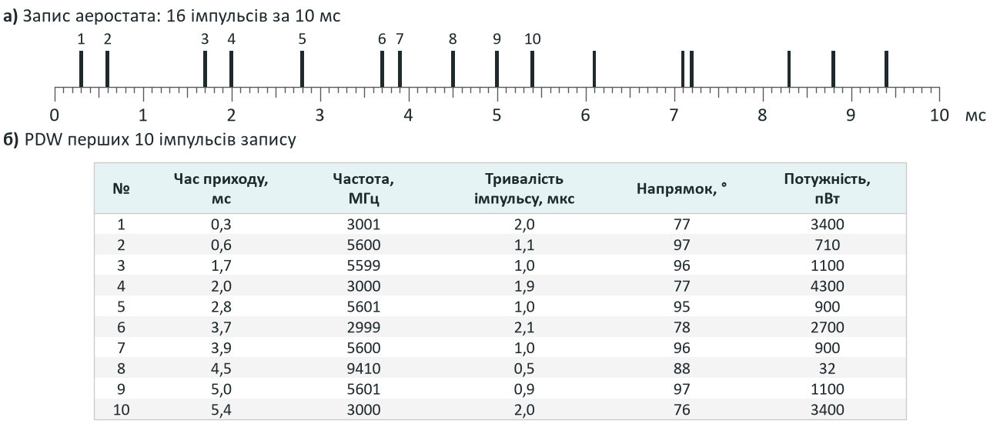
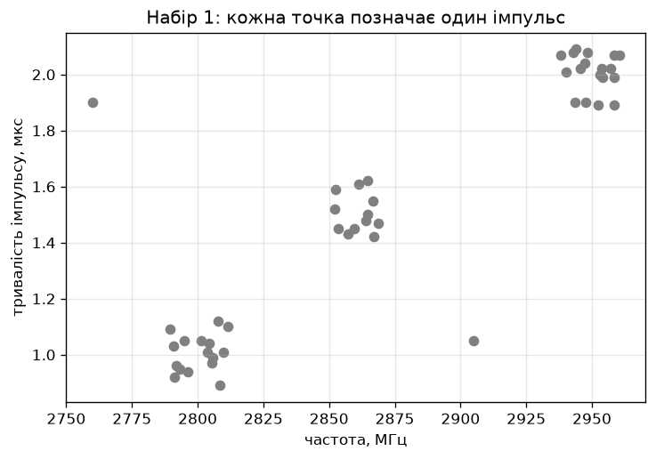

Тема 5. Радіотехнічна розвідка: визначення параметрів сигналів
Тут зібрано все для практичної частини теми: вправа із записом імпульсів, відповіді до якої можна перевірити просто на цій сторінці, аркуш для друку, демонстрація до завдання 2, Jupyter Notebook і набори імпульсів до завдання 4, посилання на публікації, названі в темі, і відповіді.
Вправа № 1. Розплутайте потік імпульсів
О 10:35 приймач РТР на аеростаті навчального району записав імпульси радарів: 16 імпульсів за 10 мс (рис. 5.4, а). PDW перших 10 наведено в таблиці (рис. 5.4, б). Напрямок відлічують від півночі за годинниковою стрілкою.
Потужність подано в піковатах: піковат (пВт) — це трильйонна частка вата.

PDW перших 10 імпульсів як таблиця
| № | Час приходу, мс | Частота, МГц | Тривалість імпульсу, мкс | Напрямок, ° | Потужність, пВт |
|---|---|---|---|---|---|
| 1 | 0,3 | 3001 | 2,0 | 77 | 3400 |
| 2 | 0,6 | 5600 | 1,1 | 97 | 710 |
| 3 | 1,7 | 5599 | 1,0 | 96 | 1100 |
| 4 | 2,0 | 3000 | 1,9 | 77 | 4300 |
| 5 | 2,8 | 5601 | 1,0 | 95 | 900 |
| 6 | 3,7 | 2999 | 2,1 | 78 | 2700 |
| 7 | 3,9 | 5600 | 1,0 | 96 | 900 |
| 8 | 4,5 | 9410 | 0,5 | 88 | 32 |
| 9 | 5,0 | 5601 | 0,9 | 97 | 1100 |
| 10 | 5,4 | 3000 | 2,0 | 76 | 3400 |
- У яких стовпцях значення повторюються групами? У якому, крім номера, всі значення різні?
- Розділіть десять імпульсів на джерела. Обчисліть інтервал повторення кожного джерела.
- Скільки радарів записав аеростат? Які параметри розділяють їх найнадійніше? Який рядок сумнівний і чому?
- Обчисліть, коли прийде наступний імпульс кожного радара, і перевірте це на рис. 5.4, а. За інтервалом повторення оцініть, до якої відстані кожен радар шукає цілі. Що ще треба виміряти, аби вирішити, чи є в районі третє джерело?
Перевірте себе
Оберіть відповіді й натисніть «Перевірити». Кнопка «Показати пояснення» відкриває відповіді до всіх кроків.
Аркуш для друку
Аркуш до вправи № 1 (файл PDF, дві сторінки формату А4). На першій сторінці рис. 5.4, збільшений в 1,6 раза: на осі часу зручно позначати імпульси кольорами. На другій текст вправи й місце для відповідей.
Демонстрація до завдання 2
У підручнику завдання 2 записано так:
Потрібен комп’ютер або телефон з інтернетом. Демонстрація на сторінці теми (QR-код наприкінці теми) показує імпульси точками, як на рис. 5.3. Повзунок задає, наскільки близько мають лежати дві точки, щоб програма вважала їх сусідами й об’єднала в групу. Рухайте його. Коли груп стільки, скільки радарів? Що стається, коли відстань завелика або замала?
Точки позначають імпульси трьох радарів і два випадкові імпульси, як на рис. 5.3. Це модель: імпульси обчислено програмою. Кожну групу програма фарбує у свій колір, а точки без групи лишає сірими. Дві точки є сусідами, коли їхні бліді кола торкаються. Група — це щонайменше 4 точки, з’єднані між собою через сусідів.
Груп: 3. Точок без групи: 2.
Інструкція до завдання 3
У підручнику завдання 3 записано так:
Запишіть кроками алгоритм, який ділить таблицю PDW на джерела, і перевірте його на таблиці рис. 5.4, б. Оцініть модель PDW за власними критеріями: що вона зберігає про імпульс і що втрачає?
- Перечитайте пункт 3 теми. Спершу імпульси групують за параметрами, які в одного радара майже не змінюються. Потім їх розрізняють за інтервалом повторення.
- Оберіть параметри, за якими алгоритм порівнює рядки таблиці. Згадайте, якому параметру довіряють найменше і чому.
- Запишіть, наскільки можуть відрізнятися два значення, щоб алгоритм вважав їх однаковими.
- Запишіть алгоритм короткими кроками. Кожен крок має бути однією дією, яку можна виконати без здогадок: взяти рядок, порівняти два числа, поставити позначку.
- Запишіть, коли алгоритм зупиняється і що він робить з імпульсом, який не пасує до жодного джерела.
- Виконайте алгоритм на таблиці рис. 5.4, б рядок за рядком. Біля кожного рядка запишіть номер джерела. Таблиця є в частині «Вправа № 1» цієї сторінки і на аркуші для друку.
- Порівняйте результат із власною відповіддю до вправи № 1. Якщо вони різні, знайдіть крок, що помилився, і виправте його.
- Оцініть модель PDW. Накресліть два стовпці: «зберігає» і «втрачає». Критерії оберіть самі, наприклад: скільки місця займає запис, чи можна за ним розрізнити два радари, чи можна відновити форму імпульсу.
Учителеві. Хай двоє учнів обміняються алгоритмами й виконають чужий: так видно кроки, які вимагають здогадок. Критерії оцінювання є у відповідях до завдання 3.
Jupyter Notebook до завдання 4
У підручнику завдання 4 записано так:
Потрібен комп’ютер з інтернетом. Jupyter Notebook — це файл, у якому пояснення чергуються з короткими програмами мовою Python. На сторінці теми є такий файл і три набори імпульсів. Відкрийте файл у безкоштовному сервісі Google Colab, що працює у браузері. Виконайте завдання, записані в кінці файлу: вони показують, як налаштування кластеризації змінюють результат.
Набори імпульсів. Це модель: імпульси в наборах обчислено програмою. Кожен файл є таблицею: один рядок на імпульс, стовпці з часом приходу, частотою, тривалістю імпульсу й напрямком. Програма бере потрібний набір сама, зберігати файли не обов’язково.
- Набір 1 (файл
tema-5-nabir-1.csv, 48 імпульсів) - Набір 2 (файл
tema-5-nabir-2.csv, 47 імпульсів) - Набір 3 (файл
tema-5-nabir-3.csv, 36 імпульсів)
Щоб працювати в сервісі Google Colab, нічого встановлювати не треба. Потрібен лише обліковий запис Google.
- Клацніть посилання «Кластеризація мовою Python»: браузер збереже Jupyter Notebook, файл
tema-5-jupyter-notebook.ipynb, в теці завантажень. - Відкрийте сайт сервісу colab.research.google.com і ввійдіть в обліковий запис Google.
- У меню «Файл» оберіть команду, яка відкриває Jupyter Notebook, збережений на комп’ютері. Якщо меню сервісу англійською, це меню File і команда Upload notebook. Укажіть збережений файл: він відкриється, і першим у ньому буде заголовок «Тема 5. Кластеризація мовою Python».
- Jupyter Notebook складається з частин, які називають комірками: в одних комірках текст, в інших програма. Перша комірка з програмою починається словами «# Набір імпульсів зі сторінки теми 5». Клацніть цю комірку й натисніть Shift+Enter: комірка виконається, а під нею з’явиться результат.
- Так само, згори донизу, виконуйте решту комірок із програмою, а комірки з текстом читайте. Перша програма сама бере набір 1 із цієї сторінки. Під другою програмою з’явиться рисунок, як нижче.

Далі працюйте за текстом самого файлу: він веде до груп і закінчується завданнями для всіх трьох наборів.
Відповіді
Відповіді до вправи, контрольних запитань і завдань теми. Спершу виконайте вправу самі.
Публікації, названі в темі
- USD (Policy) Dr. Kahl Press Conference. Стенограма пресконференції заступника міністра оборони США Коліна Каля 8 серпня 2022 р., з якої починається тема, англійською мовою. Збережена копія сторінки сайту міністерства в Архіві інтернету.
- Spectrum Monitoring. Довідник Міжнародного союзу електрозв’язку про спостереження за радіочастотним спектром, видання 2011 р., англійською мовою. З нього взято числа радара аеропорту: тривалість імпульсу, інтервал повторення і відстань.
- GEKATA. Сторінка комплексу радіотехнічної розвідки «Геката» на сайті компанії «Інфозахист», українською мовою.
- An Industrial-Strength Audio Search Algorithm. Стаття компанії Shazam, 2003 р., англійською мовою. Її автор Avery Wang пояснює, як застосунок упізнає пісню за коротким уривком.